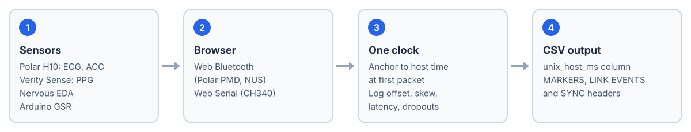

Web Biosignal Console: Synchronized ECG, EDA and Accelerometry Recording in the Browser

Overview
Off-the-shelf tools record one sensor each and leave the hardest part, aligning their clocks, to the analyst. In our setup the Polar H10's internal clock had never been set and reported 2019, while the EDA sensor reported correct POSIX time: a 7.7-year gap between two devices recording the same person at the same moment.
Web Biosignal Console is a single HTML file that records ECG, skin conductance (EDA/GSR) and accelerometry at the same time, anchors every device to the host clock at its first packet, and writes CSV to disk. There is nothing to install: no drivers and no Python runtime. Open it in Chrome or Edge and record.
How It Works

Every stream is anchored to the host clock and logged with its own sync and link metadata.
| Channel | Device | Transport | Measured rate |
|---|---|---|---|
| ECG | Polar H10 chest strap | Web Bluetooth (Polar PMD) | 129.4 to 129.9 Hz |
| ACC | Polar H10 / Verity Sense | Web Bluetooth (Polar PMD) | ~202.6 Hz / 416 Hz |
| PPG | Polar Verity Sense | Web Bluetooth (Polar PMD) | 176 Hz |
| EDA | Nervous EDA (16-frequency impedance spectroscopy) | Web Bluetooth (Nordic UART) | 8.001 Hz |
| GSR | Arduino + analog GSR module | Web Serial (CH340) | 10.00 Hz |
Every rate above was measured on real hardware. Several devices of the same type can be connected at once; each gets its own card and its own labelled column block in the CSV.
Auditable alignment
Each CSV carries three header sections before the data: MARKERS (event marks on the shared time axis), LINK EVENTS (Bluetooth disconnects and reconnects, so gaps are traceable) and SYNC (per-device clock offset, skew, transport latency and jitter). The unix_host_ms column is directly comparable across devices.
Engineering Details
Low-noise Arduino GSR
The GSR sketch integrates over a 100 ms window, exactly 5 mains cycles at 50 Hz and 6 at 60 Hz, so line-frequency pickup cancels in either region. It reports the floating-point average instead of rounding: with about 900 oversamples, effective resolution improves from about 0.05 µS to about 0.003 µS, below the conventional 0.05 µS minimum amplitude of a valid skin conductance response.
Reverse-engineered EDA protocol
The retail BLE EDA device identifies itself as a Nervous EDA sensor (INSA Lyon open hardware). The console speaks its Nordic UART Service protocol (COBS framing, Protocol Buffers payload, 16 complex impedances per frame) and computes a contact-quality metric, EDA_Cfit, from the fit of the 16 impedance points to a Nyquist circle.
Honest validation
On our unit, the EDA channel did not pass physiological validation during a mental-arithmetic stressor (r = −0.19 against simultaneously recorded heart rate), while the Arduino GSR channel did (r = +0.674). This is a single device and says nothing about the model in general; the repository documents the test so others can validate their own unit.